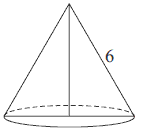
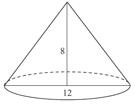
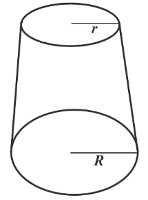

Stożek
Stożek powstaje przez obrót trójkąta prostokątnego
wokół jednej z przyprostokątnych.
Przyprostokątna ta tworzy wysokość stożka, a druga przyprostokątna staje się promieniem podstawy.
Przeciwprostokątna trójkąta prostokątnego staje się tworzącą stożka.

Przyprostokątna ta tworzy wysokość stożka, a druga przyprostokątna staje się promieniem podstawy.
Przeciwprostokątna trójkąta prostokątnego staje się tworzącą stożka.
Powyższy stożek powstał przez obrót trójkąta prostokątnego \(SBC\) wokół prostej
\(SC\).
Przekrojem osiowym stożka jest trójkąt równoramienny \(ABC\).
Podstawą stożka jest koło.
Wzór na pole podstawy stożka: \[P_p=\pi r^2\] Wzór na pole powierzchni
bocznej stożka: \[P_b=\pi rl\] Wzór na pole powierzchni całkowitej stożka: \[P_c=\pi r^2+\pi rl=\pi
r(r+l)\] Wzór na objętość stożka: \[V=\frac{1}{3}P_p\cdot h=\frac{\pi r^2h}{3}\]
Przekrojem osiowym stożka jest trójkąt równoramienny \(ABC\).
Podstawą stożka jest koło.
Pole powierzchni bocznej stożka o wysokości \(4\) i promieniu podstawy \(3\) jest
równe
A.\( 9\pi \)
B.\( 12\pi \)
C.\( 15\pi \)
D.\( 16\pi \)
C
Jeśli średnica podstawy stożka jest równa \(12\), a wysokość stożka \(8\), to kąt
\(\alpha\) między wysokością stożka, a jego tworzącą jest taki, że:
A.\( \operatorname{tg} \alpha =\frac{12}{8} \)
B.\( \operatorname{tg} \alpha =\frac{8}{12} \)
C.\( \operatorname{tg} \alpha =\frac{6}{8} \)
D.\( \operatorname{tg} \alpha =\frac{8}{6} \)
C
Przekrój osiowy stożka jest trójkątem równobocznym o boku \(a\). Objętość tego
stożka wyraża się wzorem
A.\( \frac{\sqrt{3}}{6}\pi a^3 \)
B.\( \frac{\sqrt{3}}{8}\pi a^3 \)
C.\( \frac{\sqrt{3}}{12}\pi a^3 \)
D.\( \frac{\sqrt{3}}{24}\pi a^3 \)
D
Trójkąt prostokątny o przyprostokątnych \(4\) i \(6\) obracamy wokół dłuższej
przyprostokątnej. Objętość powstałego stożka jest równa
A.\( 96\pi \)
B.\( 48\pi \)
C.\( 32\pi \)
D.\( 8\pi \)
C
Tworząca stożka ma długość \(4\) i jest nachylona do płaszczyzny podstawy pod kątem
\(60^\circ \). Objętość tego stożka jest równa
A.\( \frac{8\sqrt{3}\pi }{3} \)
B.\( \frac{10\sqrt{3}\pi }{3} \)
C.\( 3\sqrt{3}\pi \)
D.\( 16 \)
A
Tworząca stożka ma długość \( 4 \) i jest nachylona do płaszczyzny podstawy pod
kątem \( 45^\circ \). Wysokość tego stożka jest równa
A.\(2\sqrt{2} \)
B.\(16\pi \)
C.\(4\sqrt{2} \)
D.\(8\pi \)
A
Stożek powstał w wyniku obrotu trójkąta prostokątnego o przyprostokątnych \(13\) i
\(15\) wokół dłuższej przyprostokątnej. Promień podstawy tego stożka jest równy
A.\( 15 \)
B.\( 13 \)
C.\( 7{,}5 \)
D.\( 6{,}5 \)
B
Przekrój osiowy stożka jest trójkątem równobocznym o boku długości \(6\). Pole
powierzchni bocznej tego stożka jest równe: 
A.\( 12\pi \)
B.\( 18\pi \)
C.\( 27\pi \)
D.\( 36\pi \)
B
Tworząca stożka jest o \(2\) dłuższa od promienia podstawy. Pole powierzchni
bocznej tego stożka jest równe \(15\pi \). Tworząca stożka ma zatem długość
A.\( 1 \)
B.\( 5 \)
C.\( 3 \)
D.\( 15 \)
B
Wysokość stożka jest równa 15 cm, a promień podstawy 4 cm. Objętość stożka jest
równa
A.\( 60\pi \) cm3
B.\( 80\pi \) cm3
C.\( 100\pi \) cm3
D.\( 125\pi \) cm3
B
Objętość stożka jest równa \(24\pi \) cm3, a promień podstawy \(6\) cm.
Wysokość stożka jest równa
A.\( 2 \) cm
B.\( 4 \) cm
C.\( 6 \) cm
D.\( 8 \) cm
A
Powierzchnia boczna stożka po rozwinięciu jest półkolem o promieniu \(12\) cm.
Podstawa tego stożka jest kołem o promieniu
A.\( 12 \) cm
B.\( 6 \) cm
C.\( 3 \) cm
D.\( 1 \) cm
B
Objętość stożka o wysokości \(8\) i średnicy podstawy \(12\) jest równa
A.\( 124\pi \)
B.\( 96\pi \)
C.\( 64\pi \)
D.\( 32\pi \)
B
Objętość stożka o wysokości \(h\) i promieniu podstawy trzy razy mniejszym od
wysokości jest równa
A.\( \frac{1}{9}\pi h^2 \)
B.\( \frac{1}{27}\pi h^2 \)
C.\( \frac{1}{9}\pi h^3 \)
D.\( \frac{1}{27}\pi h^3 \)
D
Tworząca stożka ma długość \(l\), a promień jego podstawy jest równy \(r\).  Powierzchnia boczna tego stożka jest
\(2\) razy większa od pola jego podstawy. Wówczas
Powierzchnia boczna tego stożka jest
\(2\) razy większa od pola jego podstawy. Wówczas
Powierzchnia boczna tego stożka jest
\(2\) razy większa od pola jego podstawy. Wówczas A.\( r=\frac{1}{6}l \)
B.\( r=\frac{1}{4}l \)
C.\( r=\frac{1}{3}l \)
D.\( r=\frac{1}{2}l \)
D
Przekrojem osiowym stożka jest trójkąt równoboczny o boku długości \(6\). Objętość
tego stożka jest równa
A.\( 6\pi \)
B.\( 18\pi \)
C.\( 9\pi\sqrt{3} \)
D.\( 27\pi\sqrt{3} \)
C
Dany jest trójkąt prostokątny o długościach boków \(a, b, c\), gdzie \(a \lt b \lt
c\). Obracając ten trójkąt wokół prostej zawierającej dłuższą przyprostokątną o kąt \(360^\circ \)
otrzymujemy bryłę, której objętość jest równa
A.\( V=\frac{1}{3}a^2b\pi \)
B.\( V=a^2b\pi \)
C.\( V=\frac{1}{3}b^2a\pi \)
D.\( V=a^2\pi +\pi ac \)
A
Kula o promieniu \(5\) cm i stożek o promieniu podstawy \(10\) cm mają równe
objętości. Wysokość stożka jest równa
A.\( \frac{25}{\pi } \) cm
B.\( 10 \) cm
C.\( \frac{10}{\pi } \) cm
D.\( 5 \) cm
D
Jeżeli wysokość stożka zwiększymy trzykrotnie, a długość promienia zmniejszymy trzy
razy, to objętość nowego stożka:
A.zwiększy się trzy razy
B.zmniejszy się trzy razy
C.zmniejszy się dziewięć razy
D.nie zmieni się
B
Stożek i walec mają takie same podstawy i równe pola powierzchni bocznych. Wtedy
tworząca stożka jest
A.sześć razy dłuższa od wysokości walca
B.trzy razy dłuższa od wysokości walca
C.dwa razy dłuższa od wysokości walca
D.równa wysokości walca
C
Kąt wycinka będący powierzchnią boczną stożka jest równy \(186^\circ \), a tworząca
jest o \(4\ \text{cm}\) dłuższa od promienia podstawy bryły. Oblicz pole powierzchni całkowitej oraz
objętość stożka.
Kąt rozwarcia stożka ma miarę \(120^\circ \), a tworząca tego stożka ma długość
\(4\). Objętość tego stożka jest równa
A.\( 36\pi \)
B.\( 18\pi \)
C.\( 24\pi \)
D.\( 8\pi \)
D
Kąt rozwarcia stożka ma miarę \(120^\circ \), a tworząca tego stożka ma długość
\(6\). Promień podstawy stożka jest równy
A.\( 3 \)
B.\( 6 \)
C.\( 3\sqrt{3} \)
D.\( 6\sqrt{3} \)
C
Dany jest stożek o wysokości \(4\) i średnicy podstawy \(12\). Objętość tego stożka
jest równa
A.\( 576\pi \)
B.\( 192\pi \)
C.\( 144\pi \)
D.\( 48\pi \)
D
Dany jest stożek o wysokości \(6\) i tworzącej \(3\sqrt{5}\). Objętość tego stożka
jest równa
A.\( 36\pi \)
B.\( 18\pi \)
C.\( 108\pi \)
D.\( 54\pi \)
B
Stożek o promieniu podstawy \(r\) i kula o tym samym promieniu mają równe
objętości. Tangens kąta między tworzącą i płaszczyzną podstawy tego stożka jest równy
A.\( \frac{4}{3} \)
B.\( 12 \)
C.\( \sqrt{17} \)
D.\( 4 \)
D
Kąt rozwarcia stożka jest równy \(30^\circ \), a tworząca tego stożka ma długość
\(8\) cm. Pole przekroju osiowego tego stożka wynosi:
A.\( 64\ \text{cm}^2 \)
B.\( 32\ \text{cm}^2 \)
C.\( 16\ \text{cm}^2 \)
D.\( 16\sqrt{3}\ \text{cm}^2 \)
C
Przekrój osiowy stożka jest trójkątem równoramiennym o podstawie długości \(12\).
Wysokość stożka jest równa \(8\). Oblicz pole powierzchni bocznej tego stożka. 
\(60\pi \)
Powierzchnia boczna stożka po rozwinięciu na płaszczyznę jest ćwiartką koła o
promieniu \(8\) cm. Oblicz wysokość tego stożka.
\(h=2\sqrt{15}\)
W stożku stosunek pola powierzchni bocznej do pola podstawy jest równy
\(\frac{3}{2}\). Oblicz sinus kąta między tworzącą a płaszczyzną podstawy tego stożka.
\(\frac{\sqrt{5}}{3}\)
W stożku różnica długości tworzącej i promienia podstawy jest równa \(6\). Cosinus
kąta \(\alpha \) między tworzącą a płaszczyzną podstawy tego stożka jest równy \(\frac{2}{5}\).
Oblicz pole powierzchni bocznej tego stożka.
\(40\pi \)
Dany jest stożek, którego powierzchnia boczna jest \(2\) razy większa od pola jego
podstawy. Kąt rozwarcia tego stożka oznaczmy literką \(\alpha \). Wykaż, że suma miejsc zerowych
funkcji \(f(x)=(x - \operatorname{tg}^2 \alpha)(x-2) \) jest liczbą pierwszą.
Dany jest stożek o objętości \(8\pi \), w którym stosunek wysokości do promienia
podstawy jest równy \(3:8\). Oblicz pole powierzchni bocznej tego stożka.
\(2\pi \sqrt{73}\)
Tworząca stożka ma długość \( 17 \), a wysokość stożka jest krótsza od średnicy
jego podstawy o \( 22 \). Oblicz pole powierzchni całkowitej i objętość tego stożka.
\(P=480\pi \), \(V=600\pi \)
Tworząca stożka o kącie rozwarcia \(\alpha \) ma długość \(8\). Pole powierzchni
całkowitej tego stożka jest równe \(48\pi\). Oblicz objętość stożka oraz miarę kąta \(\alpha \).
\(\alpha =60^\circ \) i \(V=\frac{64\pi \sqrt{3}}{3}\)
Metalowy stożek, którego tworząca o długości \(10\) jest nachylona do płaszczyzny
podstawy pod kątem \(30^\circ \), przetopiono na sześć jednakowych kulek. Oblicz promień kulki.
\(r=\frac{5}{2}\)
Objętość stożka ściętego (przedstawionego na rysunku) można obliczyć ze wzoru \(V =
\frac{1}{3} \pi H (r^2 + rR + R^2)\), gdzie \(r\) i \(R\) są promieniami podstaw (\(r \lt R\)), a
\(H\) jest wysokością bryły. Dany jest stożek ścięty, którego wysokość jest równa \(10\), objętość
\(840\pi\), a \(r = 6\). Oblicz cosinus kąta nachylenia przekątnej przekroju osiowego tej bryły do
jednej z jej podstaw. 
\(\cos \alpha = \frac{9\sqrt{106}}{106}\)